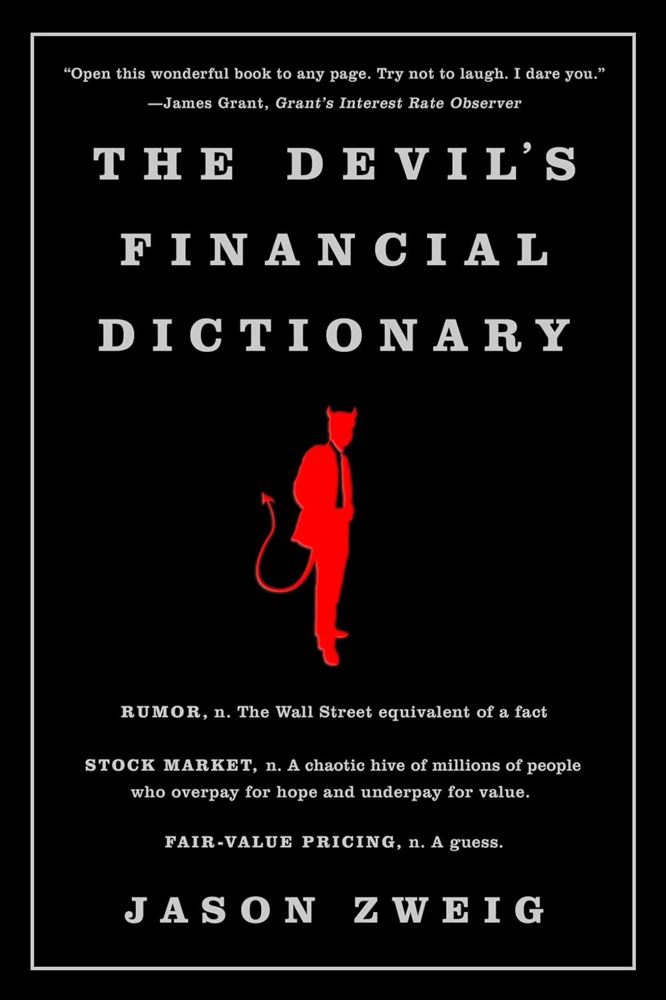

"当日交易者（DAY TRADER），名词：见'白痴'。""白痴（IDIOT），名词：见'当日交易者'。"两条词条互相指向，构成一个循环——这是杰森·茨威格（Jason Zweig）在《魔鬼金融辞典》（The Devil's Financial Dictionary）里最广为流传的玩笑之一。茨威格是《华尔街日报》"聪明的投资者"专栏作者、格雷厄姆《聪明的投资者》评注版的注释者，这本2015年出版的小书是他向安布罗斯·比尔斯（Ambrose Bierce）的致敬。比尔斯用几十年时间陆续写成、1906年结集的《魔鬼辞典》，以尖刻的反讽重新定义日常词汇；茨威格把同样的手术刀对准了华尔街的黑话。
在他笔下，金融行业最擅长的是用语言掩盖而非揭示真相。"数据（DATA），名词：华尔街用来制造扭曲、以供营销的原材料。""非理性（IRRATIONAL），形容词：你用来形容除自己以外任何投资者的词。""安全（SAFE），形容词：用来描述任何即将爆炸的投资。"这些定义读来像段子，指向的却是从业者心知肚明的真实。与比尔斯不同的是，茨威格并不满足于一句俏皮的反义，他常花上一整段追溯词源与制度演变，说明某个术语是如何一步步变成今天这副模样的——这让这本辞典既能当睡前读物，也能当一本反着读的金融入门书。
书中最见功力的往往是把复杂机制压缩成一句判词。"共同基金（MUTUAL FUND），名词：一种并不'共同'的基金——它的投资者共同承担全部风险，它的管理者则独享全部费用。"短短一句，把资产管理行业的委托代理问题说得比一整章教科书还透。再如"偏见（BIASED），形容词：人类。"三个字就点破了行为金融学的全部前提。有评论者称茨威格是"比尔斯的精神继承人（the spiritual heir to Ambrose Bierce）"，也提醒读者：这些笑话需要一定的金融常识才能会心，否则容易错过刀锋所在。
对熟悉查理·芒格的读者，这本辞典的底层逻辑并不陌生：芒格反复告诫要警惕被激励扭曲的言辞，要习惯"反过来想"。茨威格做的正是把这种怀疑制度化——他不去正面歌颂什么策略有效，而是逐条拆穿行业用词里的自利与自欺。当你下次听到"热门""核心持仓""长期视角"这类说辞时，翻一翻这本辞典给出的定义，或许比读一份研报更能让你保持清醒。